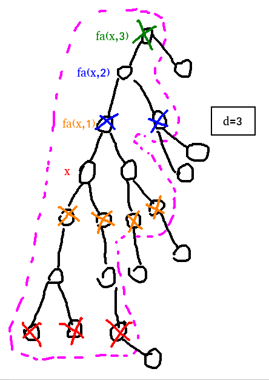
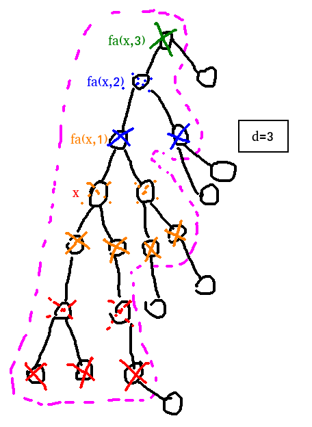

键入以搜索…
匹配算法：把输入按空格拆分，单独匹配每一段输入（不区分大小写，仅匹配文章文本内容），输出取或后的结果。
模糊搜索似乎很难搞，目前没有相关打算。
键入以搜索…
匹配算法：把输入按空格拆分，单独匹配每一段输入（不区分大小写，仅匹配文章文本内容），输出取或后的结果。
模糊搜索似乎很难搞，目前没有相关打算。
啊啊。小封条。
https://atcoder.jp/contests/arc124/tasks/arc124_e
感觉其他一些题解讲得不是特别清楚，这里参考了 XJX 的文章。
要求的答案是 \(\prod a'_i\)，发现运算是乘法，比较怪；由此考虑转化为方案数，也就是假设每个人有 \(a'_i\) 个互不相同的球，每个人在其中选出恰好一个的方案数。
考虑 DP。发现每个人手上的球分为『自己的』和『左边的人传过来的』两种类型；显然第二种会有来自上一个人的限制，考虑把第二种在上一个人就完成求解。具体地，设 \(f_{i,0}\) 表示第 \(i\) 个人选取自己的球，但只记录 \(1\sim i-1\) 的方案；\(f_{i,1}\) 表示第 \(i\) 个人选取第 \(i-1\) 个人的球，并记入答案的方案。你可能需要注意到：最后一个被记入方案的球来自第 \(i-1\) 个人。
但这样会有个小问题。我们让所有人多往右边传一个球，那么在我们的这种分割方法看来是不一样的局面；但实际上它们是等价的。从每个人传出了多少个球（设为 \(x_i\)）的角度来看，对于 \(\min\{x_n\}\ne 0\)，只需要不断执行 \(\forall\, x_i\gets x_i-1\) 就可以在局面不变的情况下使 \(\min\{x_n\}\ne 0\)。这是在说，可以让 \(\min\{x_n\}\ne 0\) 的方案和终局一一对应。
发现可以容斥：钦定 \(x_i\ge 1\)，也就是每个人必须往右传至少一个，相似地算一遍就能得到非法方案。
考虑转移，令 \(x_i\) 可选最小值为 \(l\)，有：
破环为链，分别钦定第一个人是用自己的球还是上一个人的球来解决问题（必须对于两种可能性分开计算；否则就不知道答案应该取 \(f_{n,0}\) 还是 \(f_{n,1}\)）。
#include <bits/stdc++.h>
const int mod = 998244353, inv2 = (mod + 1) >> 1, inv6 = 166374059;
int main() {
#ifdef ONLINE_JUDGE
std::ios::sync_with_stdio(false);
std::cin.tie(nullptr), std::cout.tie(nullptr);
#else
std::freopen(".in", "r", stdin);
std::freopen(".out", "w", stdout);
#endif
int n;
std::cin >> n;
std::vector<long long> a(n);
for (int i = 1; i <= n; ++i)
std::cin >> a[i % n];
auto sum = [&](long long r) {
return r * (r + 1) % mod * inv2 % mod;
};
auto sum2 = [&](long long r) {
return r * (r + 1) % mod * (2 * r % mod + 1) % mod * inv6 % mod;
};
std::vector<std::vector<long long> > f0(n, std::vector<long long> (2)), f1(n, std::vector<long long> (2));
auto calc = [&](long long l, std::vector<std::vector<long long> > &f) {
f[0][0] = 1ll;
for (int i = 0; i < n; ++i) {
int j = (i + 1) % n;
f[j][0] = f[i][0] * sum(a[i] - l) % mod;
(f[j][0] += f[i][1] * (a[i] - l + 1)) %= mod;
f[j][1] = f[i][0] * (a[i] * sum(a[i]) % mod - sum2(a[i])) % mod;
(f[j][1] += f[i][1] * sum(a[i]) % mod) %= mod;
// printf("0, l = %lld, f[%d]: %lld / %lld\n", l, j, f[j][0], f[j][1]);
}
auto res(f[0][0]);
f.assign(n, std::vector<long long> (2));
f[0][1] = 1ll;
for (int i = 0; i < n; ++i) {
int j = (i + 1) % n;
f[j][0] = f[i][0] * sum(a[i] - l) % mod;
(f[j][0] += f[i][1] * (a[i] - l + 1)) %= mod;
f[j][1] = f[i][0] * (a[i] * sum(a[i]) % mod - sum2(a[i])) % mod;
(f[j][1] += f[i][1] * sum(a[i]) % mod) %= mod;
// printf("1, l = %lld, f[%d]: %lld / %lld\n", l, j, f[j][0], f[j][1]);
}
return (res + f[0][1]) % mod;
};
std::cout << (calc(0, f0) + mod - calc(1, f1)) % mod << '\n';
return 0;
}因为只关心最终状态，原题可以转化为：将 \(d\) 分成 \(n\) 个非负整数，前 \(r\) 大数之和的期望（当然你需要加上初始的 \(r\) 个）。
关于非负整数拆分：设 \(f_{i,j}\) 表示将 \(i\) 分成 \(j\) 个 非负整数 的方案，钦定其中恰有 \(k\) 个 正整数 进行转移，给这 \(k\) 个数先分一个 \(1\)，则 \(f_{i,j}=\sum\limits_{k=0}^{\min(i,j)} C_j^k\cdot f_{i-k,k}\)。
再设 \(g_{i,j}\) 表示将 \(i\) 分成 \(j\) 个非负整数的所有方案中、前 \(r\) 大的数之和。类似地，有 \(g_{i,j}=\sum\limits_{k=0}^{\min(i,j)} C_j^k\cdot (g_{i-k,k}+\min(k,r)\cdot f_{i-k,k})\)。其中，\(\min(k,r)\) 的来源是，只有 \(k\) 个数有值，前 \(r\) 大的数一定在这 \(k\) 个数里面。
答案为 \(\dfrac {g_{d,n}}{f_{d,n}}+r\)，复杂度 \(O(n^3)\)。
#include <bits/stdc++.h>
int main() {
#ifdef ONLINE_JUDGE
std::ios::sync_with_stdio(false);
std::cin.tie(nullptr), std::cout.tie(nullptr);
#else
std::freopen(".in", "r", stdin);
std::freopen(".out", "w", stdout);
#endif
int n, d, r;
std::cin >> n >> d >> r;
using arr = std::vector<double>;
std::vector<arr> f(d + 1, arr(n + 1)), g(d + 1, arr(n + 1)), C(n + 1, arr(n + 1));
for (int i = 0; i <= n; ++i) {
C[i][0] = 1.;
for (int j = 1; j <= i; ++j)
C[i][j] = C[i - 1][j - 1] + C[i - 1][j];
}
f[0].assign(n + 1, 1.);
for (int i = 1; i <= d; ++i)
for (int j = 1; j <= n; ++j) {
for (int k = 1; k <= i && k <= j; ++k) {
f[i][j] += C[j][k] * f[i - k][k];
g[i][j] += C[j][k] * (g[i - k][k] + std::min(k, r) * f[i - k][k]);
// printf(" k = %d, %.0lf + %.0lf\n", k, C[j][k] * g[i - k][k], std::min(k, r) * f[i - k][k]);
}
// printf("f[%d][%d] = %.0lf, g[%d][%d] = %.0lf\n", i, j, f[i][j], i, j, g[i][j]);
}
std::cout << std::fixed << std::setprecision(8) << g[d][n] / f[d][n] + r << '\n';
return 0;
}https://www.luogu.com.cn/problem/P7296
给每个字母分配一个标号 \(x\)，那么最小段数就是 \(\sum \left[x_i\ge x_{i+1}\right]\)。
考虑状压完成映射操作，令 \(f_{s}\) 表示给标号 \(1\sim |s|\) 分配字母后，占用字符集 \(s\) 的方案数，那么就能 \(O(1)\) 得到贡献——只需预处理出 \(f_{c, s}\) 表示分配到字母 \(c\) 时，已经先给 \(s\) 中字母分配了更小标号时的贡献。
注意字符集大小只有 \(20\)，可以 \(O(|S|\cdot 2^{|S|})\) 解决问题，注意到预处理的内容是类高维前缀最值的形式，可以递推降低复杂度。
#include <bits/stdc++.h>
const int inf = 0x3f3f3f3f;
int main() {
#ifdef ONLINE_JUDGE
std::ios::sync_with_stdio(false);
std::cin.tie(nullptr), std::cout.tie(nullptr);
#else
std::freopen(".in", "r", stdin);
std::freopen(".out", "w", stdout);
#endif
int n;
std::string t;
std::cin >> t, n = (int)t.length(), t = "#" + t;
std::vector<int> a, tag(26, -1), s(n + 1);
for (int i = 1; i <= n; ++i) {
if (tag[t[i] - 'a'] == -1)
tag[t[i] - 'a'] = (int)a.size(), a.push_back(t[i] - 'a');
s[i] = tag[t[i] - 'a'];
}
int m = (int)a.size(), siz = 1 << m;
std::vector<std::vector<int> > cnt(m, std::vector<int> (m));
for (int i = 1; i < n; ++i)
++cnt[s[i]][s[i + 1]];
std::vector<std::vector<int> > g(m, std::vector<int> (siz));
for (int i = 0; i < m; ++i)
for (int k = 0; k < m; ++k) // 注意这里相当于是钦定从 k 处转移
for (int j = (1 << k); j < (2 << k); ++j) // 枚举的是 k 位为 1 的所有数；这两层循环的复杂度为 O(siz)
g[i][j] = g[i][j ^ (1 << k)] + cnt[i][k]; // 目的是此处的内存连续访问优化，把 ^ 看作 - 应该就能理解为什么第二维是连续的
std::vector<int> f(siz, inf);
f[0] = 1;
for (int i = 1; i < siz; ++i)
for (int j = 0; j < m; ++j)
if ((i >> j) & 1)
f[i] = std::min(f[i], f[i ^ (1 << j)] + g[j][i]);
std::cout << f[siz - 1] << '\n';
return 0;
}https://www.luogu.com.cn/problem/P11845
先考虑 \(01\) 序列的答案：如果序列中存在相邻的 \(2\) 个 \(1\)，总能保证最后的一个是 \(1\)。
如果序列中存在 \(\ge 3\) 个 \(1\)，可以牺牲其中的一些使得 \(2\) 个 \(1\) 相邻。
当序列中只有 \(2\) 个 \(1\) 时，只有因为剩下的 \(0\) 不太够，导致我们无法随意『上下其手』时不能将 \(2\) 个 \(1\) 挪到一起。
令两个 \(1\) 为序列最大值与次大值，暴搜处理序列长度较小的情况，剩下的直接用奇偶性判断两个 \(1\) 取哪个。
https://atcoder.jp/contests/arc167/tasks/arc167_c
相当于把 \(a\) 打乱然后处理原问题。考虑每个 \(a_i\) 的贡献次数。模拟 Kruskal 连边，从小到大把点 \(a_i\) 加入图，\(a_i\) 可以向 \(a_{[i-K,i+K]}\) 内所有连通块连边。
连通块数量当且仅当 \([i-K,i)\) 内最靠右的点和 \((i, i+K]\) 内最靠左的点距离 \(>K\) 时为 \(2\)，其余情况为 \(1\)。
但要是从这个角度想这个题就不太好做了。正确的想法应该是拆分为『若 \([i-K,i)\) 中有点，贡献次数 \(+1\)』和『若 \((i,i+K]\) 中有点 \(j\) 满足 \([j-K,j)\) 中无点，贡献次数 \(+1\)』。对于第一个问题，贡献次数将前 \(i-1\) 大的数分配至少一个到 \([i-K,i)\) 中的方案数；对于第二个问题，枚举 \(j\)，贡献次数为将前 \(i-1\) 大的数分配到 \(j\) 和 \([1,j-K)\cup (j, n]\) 中的方案数。
实现的时候千万注意循环变量枚举的是位置还是值！不然你会调得很痛苦。
#include <bits/stdc++.h>
const int mod = 998244353;
int main() {
#ifdef ONLINE_JUDGE
std::ios::sync_with_stdio(false);
std::cin.tie(nullptr), std::cout.tie(nullptr);
#else
std::freopen("03-max-01.in", "r", stdin);
std::freopen(".out", "w", stdout);
#endif
int n, k;
std::cin >> n >> k;
std::vector<int> a(n + 1);
for (int i = 1; i <= n; ++i)
std::cin >> a[i];
std::sort(a.begin() + 1, a.end());
std::vector<long long> fac(n + 1), inv(n + 1);
fac[0] = inv[0] = 1ll;
for (int i = 1; i <= n; ++i)
fac[i] = fac[i - 1] * i % mod;
auto qkp = [](long long x, int y) {
auto res(1ll);
for (; y; (x *= x) %= mod, y >>= 1)
if (y & 1)
(res *= x) %= mod;
return res;
};
inv[n] = qkp(fac[n], mod - 2);
for (int i = n - 1; i; --i)
inv[i] = inv[i + 1] * (i + 1) % mod;
auto A = [&](int n, int m) {
if (n < m)
return 0ll;
return fac[n] * inv[n - m] % mod;
};
auto C = [&](int n, int m) {
return A(n, m) * inv[m] % mod;
};
long long res = 0ll;
for (int i = 2; i <= n; ++i) {
for (int j = 1; j <= n; ++j)
(res += a[i] * (fac[n - 1] + mod - A(n - 1 - (j - std::max(1, j - k)), i - 1) * fac[n - i] % mod) % mod) %= mod;
for (int j = 2; j <= n; ++j)
(res += a[i] * C(i - 1, i - 2) % mod * C(j - std::max(1, j - k), 1) % mod * A(n - (j - std::max(1, j - k) + 1), i - 2) % mod * fac[n - i] % mod) %= mod;
}
std::cout << res << '\n';
return 0;
}https://atcoder.jp/contests/arc174/tasks/arc174_e
发现可以分类讨论。假设 \(a'\) 中第一个异于 \(a\) 的位置为 \(i\)，\(x\) 在 \(a\) 中位置为 \(pos_x\)（不存在则 \(pos_x=k+1\)）。令 \(f_i\) 为若 \(1\sim i-1\) 均相同，\(i\) 位置可选的选项数。则 \(x\) 出现的次数：
| \(pos_x<i\) | \(pos_x=i\) | \(pos_x>i,i<k\) | |
|---|---|---|---|
| \(x\le a_i\) | \(1+f_i\cdot A_{n-i}^{k-i}\) | \(f_i\cdot C_{k-i}^1\cdot A_{n-i-1}^{k-i-1}\) | \((f_i-1)\cdot C_{k-i}^1\cdot A_{n-i-1}^{k-i-1}+A_{n-i}^{k-i}\) |
| \(x>a_i\) | \(f_i\cdot A_{n-i}^{k-i}\) | \(0\) | \(f_i\cdot C_{k-i}^1\cdot A_{n-i-1}^{k-i-1}\) |
故，对于任意 \(x\)，答案为：
\[ \begin{aligned} &1+\left(\sum_{i=pos_x+1}^k f_i\cdot A_{n-i}^{k-i}\right) +\sum_{i=1}^{pos_x} (f_i-[x< a_i])\cdot C_{k-i}^1\cdot A_{n-i-1}^{k-i-1}+[x< a_i]\cdot A_{n-i}^{k-i}\\ =&1+\left(\sum_{i=pos_x+1}^k f_i\cdot A_{n-i}^{k-i}\right) +\left(\sum_{i=1}^{pos_x} f_i\cdot C_{k-i}^1\cdot A_{n-i-1}^{k-i-1}\right)+\sum_{i=1,a_i> x}^{pos_x}A_{n-i}^{k-i}-C_{k-i}^1\cdot A_{n-i-1}^{k-i-1}\\ \end{aligned} \]
预处理出 \(f_i=\sum\limits_{j=i+1}^k [a_j< a_i]\)（需要数据结构）、\(g_i=\sum\limits_{j=1}^i f_j\cdot A_{n-j}^{k-j}\) 和 \(h_j=\sum\limits_{j=1}^i f_i\cdot C_{k-i}^1\cdot A_{n-i-1}^{k-i-1}\)，再用数据结构计算 \(\sum\limits_{i=1,a_i>x}^{pos_x}C_{k-i}^1\cdot A_{n-i-1}^{k-i-1} - A_{n-i}^{k-i}\) 即可。
#include <bits/stdc++.h>
const int mod = 998244353;
int main() {
#ifdef ONLINE_JUDGE
std::ios::sync_with_stdio(false);
std::cin.tie(nullptr), std::cout.tie(nullptr);
#else
std::freopen(".in", "r", stdin);
std::freopen(".out", "w", stdout);
#endif
int n, k;
std::cin >> n >> k;
std::vector<int> a(k + 1), p(n + 1, k + 1);
for (int i = 1; i <= k; ++i)
std::cin >> a[i], p[a[i]] = i;
std::vector<long long> fac(n + 1), inv(n + 1);
{
fac[0] = inv[0] = 1ll;
for (int i = 1; i <= n; ++i)
fac[i] = fac[i - 1] * i % mod;
auto qkp = [](long long x, int y) {
auto res(1ll);
for (; y; (x *= x) %= mod, y >>= 1)
if (y & 1)
(res *= x) %= mod;
return res;
};
inv[n] = qkp(fac[n], mod - 2);
for (int i = n - 1; i; --i)
inv[i] = inv[i + 1] * (i + 1) % mod;
}
auto A = [&](int n, int m) {
if (n < m || m < 0)
return 0ll;
return fac[n] * inv[n - m] % mod;
};
std::vector<long long> f(k + 1), g(k + 1), h(k + 1);
std::vector<long long> bit(n + 1);
auto lowbit = [](int x) {
return x & -x;
};
auto add = [&](int x, int v) {
for (; x <= n; x += lowbit(x))
(bit[x] += v) %= mod;
return;
};
auto ask = [&](int x) {
auto res(0ll);
for (; x; x -= lowbit(x))
(res += bit[x]) %= mod;
return res;
};
for (int i = 1; i <= n; ++i)
if (p[i] == k + 1)
add(i, 1);
for (int i = k; i; --i)
f[i] = ask(a[i]), add(a[i], 1);
for (int i = 1; i <= k; ++i) {
g[i] = (g[i - 1] + f[i] * A(n - i, k - i)) % mod;
h[i] = (h[i - 1] + f[i] * (k - i) % mod * A(n - i - 1, k - i - 1)) % mod;
// printf("%d: f = %lld, g = %lld, h = %lld\n", i, f[i], g[i], h[i]);
}
std::vector<long long> res(n + 1);
bit.assign(n + 1, 0ll);
auto s(0ll);
for (int i = 1; i <= k; ++i) {
// printf("%d: %lld + %lld + %lld\n", a[i], 1 + g[k] - g[i], h[i], s - ask(a[i]));
res[a[i]] = (1 + g[k] - g[i] + h[i] + (s - ask(a[i]))) % mod;
res[a[i]] = (res[a[i]] + mod) % mod;
(s += A(n - i, k - i) - (k - i) * A(n - i - 1, k - i - 1)) %= mod;
add(a[i], (A(n - i, k - i) - (k - i) * A(n - i - 1, k - i - 1)) % mod);
}
for (int i = 1; i <= n; ++i)
if (p[i] == k + 1) {
res[i] = (h[k] + (s - ask(i))) % mod;
res[i] = (res[i] + mod) % mod;
}
for (int x = 1; x <= n; ++x)
std::cout << res[x] << '\n';
return 0;
}https://atcoder.jp/contests/arc187/tasks/arc187_c
首先是被考烂了的：对序列进行一次冒泡排序，等价于将序列在前缀最大值处分段，并将其从段首移到段尾；且满足排序前为前缀最大值的元素，排序后仍为前缀最大值。
考虑用 DP 解决问题。注意状态要从 \(P\) 的角度出发——假如 \(Q\) 中不存在 \(-1\)，发现也需要 DP。此时再设计有关 \(Q\) 的状态就很扯淡了，考虑令 \(f_{i,j}\) 表示 \(P\) 中直到第 \(i\) 位的前缀最大值为 \(j\) 的方案数。为什么把前缀最大值作为状态呢？因为它可以表示分段；同时限制段间数的取值。具体地，考虑转移：
关于初值，可以在 \(P\) 前加一个 \(0\) 作为排列的一部分（那么按照冒泡排序的规则 \(Q\) 的第一位也一定是 \(0\)）来处理就好了。
#include <bits/stdc++.h>
const int mod = 998244353;
int main() {
#ifdef ONLINE_JUDGE
std::ios::sync_with_stdio(false);
std::cin.tie(nullptr), std::cout.tie(nullptr);
#else
std::freopen(".in", "r", stdin);
std::freopen(".out", "w", stdout);
#endif
int n;
std::cin >> n;
std::vector<int> q(n + 1), t(n + 1), c(n + 1), pos(n + 1);
for (int i = 1; i <= n; ++i) {
std::cin >> q[i], c[i] = c[i - 1];
if (q[i] == -1)
++c[i];
else
pos[q[i]] = i;
}
for (int i = 1; i < n; ++i) {
// printf("t[%d] = %d\n", i, t[i]);
if (!pos[i])
for (int j = i + 1; j <= n; ++j)
++t[j];
}
std::vector<std::vector<long long> > f(n + 1, std::vector<long long> (n + 1)), s(n + 1, std::vector<long long> (n + 1));
f[0][0] = 1ll;
s[0].assign(n + 1, 1ll);
for (int i = 1; i <= n; ++i)
for (int j = 1; j <= n; ++j) {
if (q[i - 1] == -1)
f[i][j] = (s[i - 1][j - 1] + f[i - 1][j] * std::max(0, 1 + t[j] - c[i - 1])) % mod;
else if (q[i - 1] < j)
f[i][j] = (f[i - 1][q[i - 1]] + f[i - 1][j]) % mod;
s[i][j] = s[i][j - 1];
if (q[i] == j || !pos[j]) // 满足前缀最大值
(s[i][j] += f[i][j]) %= mod;
// printf("f[%d][%d] = %lld\n", i, j, f[i][j]);
}
std::cout << f[n][n] << '\n';
return 0;
}给定一个大小为 \(n\) 的树，点有点权。给定 \(q\) 次操作，分为两种：
1 x：查询 \(x\) 的点权。2 x d v对于所有距 \(x\) 不超过 \(d\) 的点，将它们的权值加上 \(v\)。\(n,q\le 10^5,d\le 20\)。
由于 \(d\) 很小，我们可能需要枚举与 \(x\) 距离 \(0\sim d\) 的点进行修改；那么对距离 \(x\) 为 \(i\) 的点的更改存储在 \(f_{x,i}\)，查询 \(v\) 时就可以从 \(\sum\limits_i f_{fa(v,i),i}\) 求得答案。
考虑修改。记 \(S_{x,d}\) 为距 \(x\) 为 \(d\) 的点集。\(x\) 子树内是好处理的，但子树外的呢？发现 \(S_{fa,d-1}\) 中 \(x\) 子树外的点，就是 \(fa\) 子树下、\(x\) 子树外距离 \(x\) 为 \(d\) 的所有点。
由于所有 \(S_{fa(x,i),d-i}\) 无交，这可能满足我们每个待操作点被不重不漏加一次的要求。考虑将所有 \(S_{fa(x,i),d-i}\) 标记出来：

然后我们可以一眼发现被叉的点和未被叉的待操作点是交错的！这意味着我们只需要再补充上所有 \(S_{fa(x,i),d-i-1}\) 即可（显然它们之间、它们和所有 \(S_{fa(x,i),d-i}\) 之间都不交）。

此时就可以不重不漏。当然，也会存在一些细节：比如说 \(fa(x,i)\) 不存在之类。只需要在根节点 \(1\) 处将剩余的 \(S_{1,i\to 0}\) 全部更新即可。
故每次修改操作只需要修改 \(O(d)\) 坨点。时间复杂度 \(O(qd)\)。
https://codeforces.com/problemset/problem/1749/F
本例中将单点修改替换为路径修改；考虑树剖解决问题。
对于路径上的所有点 \(u\)，容易发现只需要修改所有的 \(S_{u,d}\) 就可以完成对『一部分路径内侧的点』的修改。这『一部分』，是因为不包括距离 LCA \(\le d\) 的点。
而『另一部分路径内侧的点（距 LCA \(\le d\)：见上一行说明）』及『路径外侧的点（距 LCA \(\le d\)：因为路径在 LCA 子树内，LCA 能够到最远的外侧点）』，等价于『距 LCA \(\le d\) 的点』，只需要把 LCA 代入上例中方式修改即可。
修改路径上所有点 \(u\) 的 \(S_{u,d}\) 时，可以对所有 \(f_{*,i}\) 建立数据结构，由于只需要区间修改、单点查询，使用差分树状数组即可。
#include <bits/stdc++.h>
int main() {
#ifdef ONLINE_JUDGE
std::ios::sync_with_stdio(false);
std::cin.tie(nullptr), std::cout.tie(nullptr);
#else
std::freopen(".in", "r", stdin);
std::freopen(".out", "w", stdout);
#endif
int n, m;
std::cin >> n;
std::vector<std::vector<int> > g(n + 1);
for (int i = 1, x, y; i < n; ++i) {
std::cin >> x >> y;
g[x].push_back(y), g[y].push_back(x);
}
std::vector<int> siz(n + 1), dep(n + 1), fa(n + 1), son(n + 1);
std::function<void(int, int)> DFS = [&](int x, int faa) {
siz[x] = 1;
for (auto i : g[x])
if (i != faa) {
fa[i] = x, dep[i] = dep[x] + 1;
DFS(i, x);
siz[x] += siz[i];
if (siz[i] > siz[son[x]])
son[x] = i;
}
return;
};
DFS(1, -1);
std::vector<int> dfn(n + 1), top(n + 1);
DFS = [&](int x, int toop) {
static int now = 0;
dfn[x] = ++now, top[x] = toop;
if (son[x])
DFS(son[x], toop);
for (auto i : g[x])
if (i != fa[x] && i != son[x])
DFS(i, i);
return;
};
DFS(1, 1);
std::vector<std::vector<long long> > bit(21, std::vector<long long> (n + 1));
auto lowbit = [&](int x) {
return x & -x;
};
auto add = [&](auto &bit, int x, int v) {
for (; x <= n; x += lowbit(x))
bit[x] += v;
return;
};
auto ask = [&](auto &bit, int x) {
auto res(0ll);
for (; x; x -= lowbit(x))
res += bit[x];
return res;
};
std::cin >> m;
for (int op; m--; ) {
std::cin >> op;
if (op == 1) {
int x;
std::cin >> x;
auto res(0ll);
for (int i = 0; i <= 20 && x; ++i, x = fa[x])
res += ask(bit[i], dfn[x]);
std::cout << res << '\n';
}
else {
int x, y, v, d;
std::cin >> x >> y >> v >> d;
for (; top[x] != top[y]; x = fa[top[x]]) {
if (dep[top[x]] < dep[top[y]])
std::swap(x, y);
add(bit[d], dfn[top[x]], v);
add(bit[d], dfn[x] + 1, -v);
}
if (dep[x] > dep[y])
std::swap(x, y);
add(bit[d], dfn[x] + 1, v), add(bit[d], dfn[y] + 1, -v);
for (x = x, y = d; ~y && x; x = fa[x], --y) {
add(bit[y], dfn[x], v), add(bit[y], dfn[x] + 1, -v);
if (y && fa[x])
add(bit[y - 1], dfn[x], v), add(bit[y - 1], dfn[x] + 1, -v);
}
if (x == 0)
for (; ~y; --y)
add(bit[y], dfn[1], v), add(bit[y], dfn[1] + 1, -v);
}
}
return 0;
}https://codeforces.com/problemset/problem/1852/C
考虑这么一个简化版的问题：
给定 \(\{a_n\}\)，每次可以进行区间 \(-1\)，问操作多少次才能将所有元素变为 \(0\)。
会想到差分；对原数组进行差分，一次操作相当于令 \(d_l\gets d_l-1\) 而 \(d_{r+1}\gets d_{r+1}+1\)，最后要让 \(\forall \,d_i=0\)。那么答案就是差分数组中正数之和嘛。
回到原问题。原问题等价于把上述问题变为：
给定 \(\{a_n\}\)，每次可以进行区间 \(-1\)，每个数的总操作次数对 \(k\) 取模，问操作多少次才能将所有元素变为 \(0\)。
怎么套回到刚刚的问题上呢？还原被取模掉的操作即可。具体来说，提前在 \(d\) 上进行若干次操作（记为操作 1），形如令 \(d_i\gets d_i+k\)，同时 \(d_{i+1}\gets d_{i+1}-k\)。
会发现相邻的操作 \(1\) 对一个数加加减减影响判断；发现可以合并一段连续的操作 1，表现在 \(a\) 上也就是区间 \(+k\)。此时可以发现，一个位置上只会剩下若干次 \(+k\) 或若干次 \(-k\) （否则可以把 \(+k\) 和 \(-k\) 代表的不同操作合并），就不会有互相影响一说了。这也是有的题解说可以提前在 \(a\) 上区间 \(+k\) 的原因。
此时问题变为在 \(d\) 进行任意次前加 \(k\) 后减 \(k\) 的操作，使得 \(\sum\limits_{d_i>0}d_i\) 最大化。那么显然如果要使代价更小，只可能在原本 \(<0\) 的位置做加法、\(>0\) 的位置做减法（其他情况会发现一定不优）。考虑两个数 \(d_l,d_r\)，可以感受到对于一个 \(r\)，选最小的 \(d_l\) 是最优的，但什么时候应该选呢？
\(d_l\le -k,d_r\ge k\)：当然可选，\(k\) 被完全利用，答案减少 \(k\)。
\(d_l>-k,d_r\ge k\)：此时 \(k\) 未被完全利用，但必须选：选择其他更大的数，\(k\) 的利用率只会更低；如果不选，答案也无法减少。
Q：此时是否需要尝试找到一个 \(l'<l\) 与 \(l\) 做操作，使得 \(l\) 重新变为负数呢？
A：否。因为你可以将这两次操作合并，发现相当于是直接对 \((l',r)\) 做操作，是更劣的。
\(d_l\le -k,d_r<k\)：此时 \(k\) 未被完全利用，\(d_r\) 成为负数。这意味着 \(d_r\) 将会成为某个 \(r'\) 的可选项。考察 \(d_{r'}\) 可用的最小值。如果 \(d_r\) 在当前不应该作为右端点，它就一定会被 \(d_{r'}\) 选择。具体的有点抽象，但是你可以理解为 \(d_r\) 选了 \(d_l\) 的贡献是被整合到 \(d_r\) 里的；如果 \(d_r\) 被选了就说明 \(d_{r'}\) 选 \(d_l\) 会拥有更大的优势。
\(d_l>-k,d_r<k\)：和上面的情况相似；但这种情况下答案可能反而变得更大，因为没有后效性，所以至少要保证单步最优。此时不能选。
说到单步最优，就会发现这里就是反悔贪心；单步最优一定是全局最优，但更靠前的局部最优可能被否定掉。而『否定』的方法表现为一次操作。
综上，从前往后扫，优先队列实时维护负数最小值，对于每个正数，check 选最小值是否优于当前答案，有就选。如果正数被减为负，加入队列。
#include <bits/stdc++.h>
int main() {
#ifdef ONLINE_JUDGE
std::ios::sync_with_stdio(false);
std::cin.tie(nullptr), std::cout.tie(nullptr);
#else
std::freopen(".in", "r", stdin);
std::freopen(".out", "w", stdout);
#endif
int T;
for (std::cin >> T; T--; ) {
int n, k;
std::cin >> n >> k;
std::vector<int> a(n + 1), d(n + 1);
long long res(0ll);
for (int i = 1; i <= n; ++i) {
std::cin >> a[i], a[i] %= k;
d[i] = a[i] - a[i - 1];
if (d[i] > 0)
(res += d[i]);
}
std::priority_queue<int> q;
for (int i = 1; i <= n; ++i)
if (d[i] < 0)
q.push(-d[i]);
else {
for (; !q.empty() && d[i] > 0; ) {
int x = -q.top(), y = d[i];
auto t(res - y);
x += k, y -= k;
if (x > 0)
t += x;
if (y > 0)
t += y;
if (t >= res)
break;
q.pop();
res = t, d[i] = y;
if (d[i] < 0)
q.push(-d[i]);
}
}
std::cout << res << '\n';
}
return 0;
}https://codeforces.com/problemset/problem/1852/D
从构造的角度出发，看到『恰好为 \(k\)』，会想到找到上界和下界并证明中间每一个数都能取到。
但似乎很容易证伪：例如对于 AAAA，下界为 \(0\)，上界为 \(4\)，但有且仅有 \(1\)
取不到。但该想法并未破产——可以感受到这样的位置很少。进一步地，你 可以证明只有一个这样的位置，也可以
大胆猜想这样的位置一定出现在
\(l+1\)，\(r-1\)。总之现在我们的状态就减少了（或者说状态变成
DP 值了）。预处理出这个东西之后大力搜索找方案即可。
#include <bits/stdc++.h>
int main() {
#ifdef ONLINE_JUDGE
std::ios::sync_with_stdio(false);
std::cin.tie(nullptr), std::cout.tie(nullptr);
#else
std::freopen(".in", "r", stdin);
std::freopen(".out", "w", stdout);
#endif
int T;
for (std::cin >> T; T--; ) {
int n, k;
std::cin >> n >> k;
std::vector<int> a(n + 1);
for (int i = 1; i <= n; ++i) {
char t;
std::cin >> t, a[i] = (t == 'A');
if (i >= 2)
k -= (a[i] ^ a[i - 1]);
}
std::vector<std::array<std::tuple<int, int, int>, 2> > f(n + 1);
f[n][0] = { a[n], a[n], 0 }, f[n][1] = { !a[n], !a[n], 0 };
auto merge = [&](int i, int l0, int r0, int p0, int l1, int r1, int p1) {
if (l0 > l1)
std::swap(l0, l1), std::swap(r0, r1), std::swap(p0, p1);
int l = l0, r = std::max(r0, r1), p = 0;
if (!p0 && !p1) {
if (r0 < l1 - 1)
assert(r0 == l1 - 2), p = r0 + 1;
else;
}
else if (p0 && p1) {
if (p0 == p1)
p = p0;
else {
int tag0 = (l1 <= p0 && p0 <= r1), tag1 = (l0 <= p1 && p1 <= r0);
if (!tag0 && !tag1);
else if (!tag0)
p = p0;
else if (!tag1)
p = p1;
else;
}
}
else if (p0) {
if (l1 <= p0 && p0 <= r1);
else
p = p0;
}
else {
if (l0 <= p1 && p1 <= r0);
else
p = p1;
}
assert(p != l && p != r && l <= r);
return std::make_tuple(l, r, p);
};
for (int i = n - 1; i; --i) {
{
auto [l0, r0, p0] = f[i + 1][0];
auto [l1, r1, p1] = f[i + 1][1];
if (a[i]) {
++l0, ++r0, ++l1, ++r1;
if (p0) ++p0;
if (p1) ++p1;
}
++l1, ++r1;
if (p1) ++p1;
f[i][0] = merge(i, l0, r0, p0, l1, r1, p1);
}
{
auto [l0, r0, p0] = f[i + 1][0];
auto [l1, r1, p1] = f[i + 1][1];
if (!a[i]) {
++l0, ++r0, ++l1, ++r1;
if (p0) ++p0;
if (p1) ++p1;
}
++l0, ++r0;
if (p0) ++p0;
f[i][1] = merge(i, l0, r0, p0, l1, r1, p1);
}
}
std::vector<int> res(n + 1);
std::function<bool(int, int, int)> DFS = [&](int x, int cnt, int la) {
if (x == n + 1)
return cnt == k;
auto [l0, r0, p0] = f[x][0];
auto [l1, r1, p1] = f[x][1];
if (cnt + (la == 1) + l0 <= k && cnt + (la == 1) + r0 >= k && (!p0 || cnt + (la == 1) + p0 != k) && DFS(x + 1, cnt + (la == 1) + a[x], 0))
res[x] = 0;
else if (cnt + !la + l1 <= k && cnt + !la + r1 >= k && (!p1 || cnt + !la + p1 != k) && DFS(x + 1, cnt + !la + !a[x], 1))
res[x] = 1;
else
return false;
return true;
};
if (DFS(1, 0, -1)) {
std::cout << "YES\n";
for (int i = 1; i <= n; ++i)
std::cout << (res[i] ? 'A' : 'B');
std::cout << '\n';
}
else
std::cout << "NO\n";
}
return 0;
}